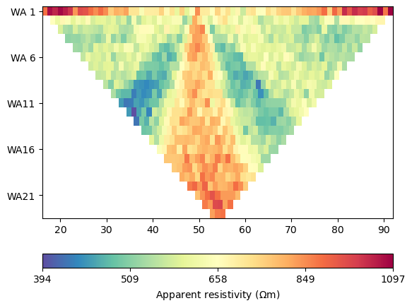
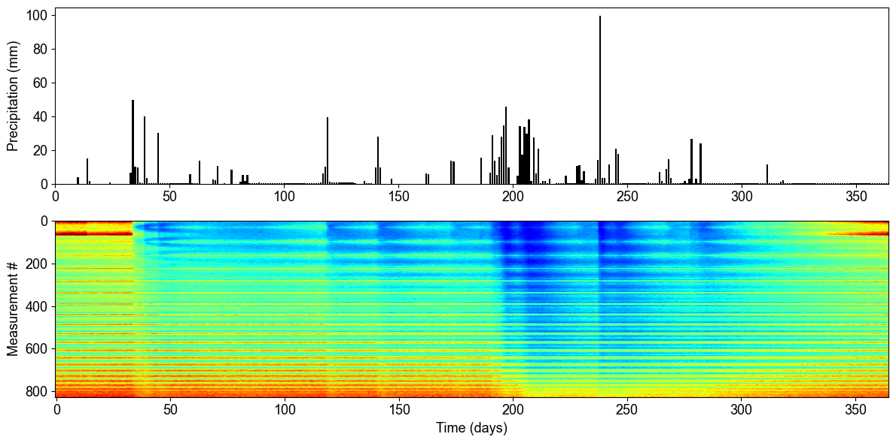
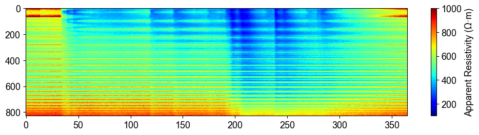
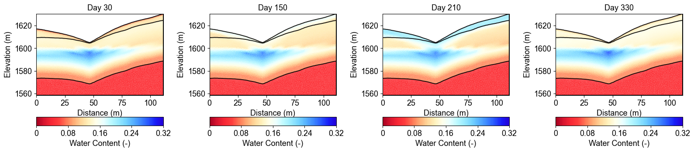
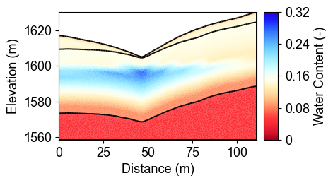

Note
Go to the end to download the full example code.
Ex. Creating Synthetic Time-Lapse ERT Measurements#
This example demonstrates how to create synthetic time-lapse electrical resistivity tomography (ERT) measurements for watershed monitoring applications.
The example covers: 1. Loading time-series water content data from MODFLOW simulations 2. Converting water content to resistivity for each timestep 3. Forward modeling to generate synthetic ERT data for multiple time periods 4. Parallel processing for efficient computation across multiple timesteps 5. Visualization of apparent resistivity changes over time 6. Creating animations showing temporal water content variations
This workflow is essential for testing time-lapse inversion algorithms and understanding the sensitivity of ERT measurements to hydrological changes.
import json
import os
import sys
import numpy as np
import matplotlib.pyplot as plt
import pygimli as pg
from pygimli.physics import ert
from mpl_toolkits.axes_grid1 import make_axes_locatable
# Setup package path for development
try:
# For regular Python scripts
current_dir = os.path.dirname(os.path.abspath(__file__))
except NameError:
# For Jupyter notebooks
current_dir = os.getcwd()
# Add the parent directory to Python path
parent_dir = os.path.dirname(current_dir)
if parent_dir not in sys.path:
sys.path.append(parent_dir)
# Import PyHydroGeophysX modules
from PyHydroGeophysX.core.interpolation import ProfileInterpolator, create_surface_lines
from PyHydroGeophysX.core.mesh_utils import MeshCreator
from PyHydroGeophysX.petrophysics.resistivity_models import water_content_to_resistivity
from PyHydroGeophysX.forward.ert_forward import ERTForwardModeling
data_dir = os.path.join(current_dir, "data")
dataset_dir = os.path.join(data_dir, "TL_measurements")
figure_dir = os.path.join(current_dir, "results", "TL_measurements")
os.makedirs(dataset_dir, exist_ok=True)
os.makedirs(figure_dir, exist_ok=True)
mesh_path = os.path.join(dataset_dir, "mesh.bms")
appres_dir = os.path.join(dataset_dir, "appres")
water_content_mesh_path = os.path.join(dataset_dir, "water_content_mesh.npy")
resistivity_mesh_path = os.path.join(dataset_dir, "resistivity_mesh.npy")
apparent_resistivity_path = os.path.join(dataset_dir, "apparent_resistivity.npy")
porosity_mesh_path = os.path.join(dataset_dir, "porosity_mesh.npy")
os.makedirs(appres_dir, exist_ok=True)
print("Step 1: Set up the ERT profiles like in the workflow example.")
# Load domain information from files
# (Replace with your actual file paths)
idomain = np.loadtxt(os.path.join(data_dir, "id.txt"))
top = np.loadtxt(os.path.join(data_dir, "top.txt"))
porosity = np.load(os.path.join(data_dir, "Porosity.npy"))
# Define profile endpoints
point1 = [115, 70] # [col, row]
point2 = [95, 180] # [col, row]
# Initialize profile interpolator
interpolator = ProfileInterpolator(
point1=point1,
point2=point2,
surface_data=top,
origin_x=569156.2983333333,
origin_y=4842444.17,
pixel_width=1.0,
pixel_height=-1.0
)
# Interpolate porosity to profile
porosity_profile = interpolator.interpolate_3d_data(porosity)
# Load structure layers
bot = np.load(os.path.join(data_dir, "bot.npy"))
# Process layers to get structure
structure = interpolator.interpolate_layer_data([top] + bot.tolist())
# Create surface lines
# Indicate the layer for the structure regolith, fractured bedrock and fresh bedrock
top_idx=int(0)
mid_idx=int(4)
bot_idx=int(12)
surface, line1, line2 = create_surface_lines(
L_profile=interpolator.L_profile,
structure=structure,
top_idx=0,
mid_idx=4,
bot_idx=12
)
# Reuse the mesh that belongs to a cached model array. Triangle meshing can
# change slightly across PyGIMLi versions, so recreating and overwriting the
# mesh would make otherwise valid cached cell arrays incompatible.
if os.path.exists(mesh_path) and os.path.exists(water_content_mesh_path):
mesh = pg.load(mesh_path)
cached_cell_count = np.load(water_content_mesh_path, mmap_mode="r").shape[1]
if mesh.cellCount() != cached_cell_count:
raise ValueError(
"Cached mesh/model mismatch: "
f"mesh has {mesh.cellCount()} cells but water_content_mesh.npy "
f"has {cached_cell_count} values per timestep. Regenerate both together."
)
else:
mesh_creator = MeshCreator(quality=32)
mesh, _ = mesh_creator.create_from_layers(
surface=surface,
layers=[line1, line2],
bottom_depth=np.min(line2[:, 1]) - 10,
)
mesh.save(mesh_path)
ID1 = porosity_profile.copy()
ID1[:mid_idx] = 0 #regolith
ID1[mid_idx:bot_idx] = 3 # fractured bedrock
ID1[bot_idx:] = 2 # fresh bedrock
# Get mesh centers and markers
mesh_centers = np.array(mesh.cellCenters())
mesh_markers = np.array(mesh.cellMarkers())
# Interpolate porosity to mesh
porosity_mesh = interpolator.interpolate_to_mesh(
property_values=porosity_profile,
depth_values=structure,
mesh_x=mesh_centers[:, 0],
mesh_y=mesh_centers[:, 1],
mesh_markers=mesh_markers,
ID=ID1, # Use ID1 to indicate the layers for interpolation
layer_markers = [0,3,2],
)
# The repository stores the generated one-year dataset under ``data`` so that
# the inversion examples can reuse it. Set PYHYDROGEOPHYSX_WATERCONTENT to a
# full hydrological-model array when this dataset needs to be regenerated.
n_timesteps = 365
monthly_days = list(range(30, 361, 30))
monthly_ert_paths = {
day: os.path.join(appres_dir, f"synthetic_data{day}.dat")
for day in monthly_days
}
Generate the one-year water-content and resistivity models when needed.
models_complete = all(
os.path.exists(path)
for path in (water_content_mesh_path, resistivity_mesh_path)
)
if not models_complete:
# Keep all cached model properties from the same regeneration run. In
# particular, do not overwrite only the porosity file when the water-
# content and resistivity arrays are being reused.
np.save(porosity_mesh_path, porosity_mesh)
default_water_content = os.path.join(data_dir, "Watercontent.npy")
water_content_path = os.environ.get(
"PYHYDROGEOPHYSX_WATERCONTENT",
default_water_content,
)
water_content_all = np.load(water_content_path, mmap_mode="r")
if water_content_all.ndim != 4 or water_content_all.shape[0] < n_timesteps:
raise ValueError(
"A full-year Watercontent.npy with shape (at least 365, nlay, nrow, ncol) "
"is required. Set PYHYDROGEOPHYSX_WATERCONTENT to the full model output."
)
# The original hydrological run contains three years. The published
# time-lapse example uses the final year (indices 730:1095).
source_start = water_content_all.shape[0] - n_timesteps
marker_labels = [0, 3, 2]
rho_sat = [100.0, 500.0, 2400.0]
n_val = [2.2, 1.8, 2.5]
sigma_s = [0.002, 0.0, 0.0]
water_content_mesh = np.lib.format.open_memmap(
water_content_mesh_path,
mode="w+",
dtype=np.float64,
shape=(n_timesteps, mesh.cellCount()),
)
resistivity_mesh = np.lib.format.open_memmap(
resistivity_mesh_path,
mode="w+",
dtype=np.float64,
shape=(n_timesteps, mesh.cellCount()),
)
for day, source_index in enumerate(range(source_start, water_content_all.shape[0])):
water_content_profile = interpolator.interpolate_3d_data(
water_content_all[source_index]
)
wc_mesh = interpolator.interpolate_to_mesh(
property_values=water_content_profile,
depth_values=structure,
mesh_x=mesh_centers[:, 0],
mesh_y=mesh_centers[:, 1],
mesh_markers=mesh_markers,
ID=ID1,
layer_markers=marker_labels,
)
res_model = np.zeros_like(wc_mesh)
for marker, saturated_rho, exponent, surface_sigma in zip(
marker_labels, rho_sat, n_val, sigma_s
):
mask = mesh_markers == marker
res_model[mask] = water_content_to_resistivity(
wc_mesh[mask],
saturated_rho,
exponent,
porosity_mesh[mask],
surface_sigma,
)
water_content_mesh[day] = wc_mesh
resistivity_mesh[day] = res_model
if day % 30 == 0 or day == n_timesteps - 1:
print(f"Generated hydrological models for day {day}/{n_timesteps - 1}")
water_content_mesh.flush()
resistivity_mesh.flush()
metadata = {
"n_timesteps": n_timesteps,
"source_shape": list(water_content_all.shape),
"source_start_index": source_start,
"source_end_index_exclusive": int(water_content_all.shape[0]),
"profile_point1_col_row": point1,
"profile_point2_col_row": point2,
"noise_standard_deviation": 0.05,
"noise_seed_base": 1000,
"water_content_mesh_file": "water_content_mesh.npy",
"resistivity_mesh_file": "resistivity_mesh.npy",
"porosity_mesh_file": "porosity_mesh.npy",
"apparent_resistivity_file": "apparent_resistivity.npy",
"monthly_ert_days": monthly_days,
}
with open(os.path.join(dataset_dir, "metadata.json"), "w", encoding="utf-8") as stream:
json.dump(metadata, stream, indent=2)
else:
print("Using cached one-year water-content and resistivity models.")
water_content_mesh = np.load(water_content_mesh_path, mmap_mode="r")
resistivity_mesh = np.load(resistivity_mesh_path, mmap_mode="r")
Generate daily synthetic ERT measurements with deterministic 5% noise.
ert_complete = os.path.exists(apparent_resistivity_path) and all(
os.path.exists(path) for path in monthly_ert_paths.values()
)
if not ert_complete:
xpos = np.linspace(15, 15 + 72 - 1, 72)
ypos = np.interp(xpos, interpolator.L_profile, interpolator.surface_profile)
electrode_positions = np.column_stack((xpos, ypos))
schemeert = ert.createData(elecs=electrode_positions, schemeName="wa")
mesh.setCellMarkers(np.ones(mesh.cellCount()) * 2)
grid = pg.meshtools.appendTriangleBoundary(
mesh,
marker=1,
xbound=100,
ybound=100,
)
forward_operator = ert.ERTModelling()
forward_operator.setData(schemeert)
forward_operator.setMesh(grid)
apparent_resistivity = np.lib.format.open_memmap(
apparent_resistivity_path,
mode="w+",
dtype=np.float64,
shape=(n_timesteps, schemeert.size()),
)
for day in range(n_timesteps):
response = np.asarray(
forward_operator.response(resistivity_mesh[day]),
dtype=float,
)
random_generator = np.random.default_rng(1000 + day)
response *= 1.0 + random_generator.normal(0.0, 0.05, response.size)
apparent_resistivity[day] = response
if day in monthly_ert_paths:
synth_data = schemeert.copy()
synth_data["rhoa"] = response
synth_data["err"] = np.full(response.size, 0.05)
synth_data.save(monthly_ert_paths[day])
if day % 30 == 0 or day == n_timesteps - 1:
print(f"Generated synthetic ERT data for day {day}/{n_timesteps - 1}")
apparent_resistivity.flush()
else:
print("Using cached one-year synthetic ERT measurements.")
apparent_resistivity = np.load(apparent_resistivity_path, mmap_mode="r")
example to load and show the synthetic data
syn_data = pg.load(monthly_ert_paths[30])
ert.show(syn_data)
Synthetic ERT Data Visualization#
This plot shows a single timestep of synthetic ERT measurements. The data represents apparent resistivity values measured at different electrode configurations. Each point corresponds to a specific current injection and voltage measurement pair, providing information about subsurface resistivity distribution at this particular time.
{kind=link}

%% Load the consolidated daily apparent-resistivity responses.
syn_data_array = np.asarray(apparent_resistivity)
## plot the apparent resitivity
import pandas as pd
import matplotlib.pylab as pylab
params = {'legend.fontsize': 13,
#'figure.figsize': (15, 5),
'axes.labelsize': 13,
'axes.titlesize':13,
'xtick.labelsize':13,
'ytick.labelsize':13}
pylab.rcParams.update(params)
plt.rcParams["font.family"] = "Arial"
rng = pd.date_range(start="09/01/2011", end="08/30/2012", freq="D")
precip = np.load(os.path.join(data_dir, "precip.npy"))
syn_data_array.shape
plt.figure(figsize=(12, 6))
plt.subplot(211)
plt.bar(np.arange(365),precip,color='k')
plt.xlim([0,364])
plt.ylabel('Precipitation (mm)')
plt.xlabel('Time (days)')
plt.subplot(212)
plt.imshow(syn_data_array.T, aspect='auto', cmap=pg.utils.cMap('rhoa'), vmin=200, vmax=2000)
plt.ylabel('Measurement #')
plt.xlabel('Time (days)')
plt.tight_layout()
plt.savefig(os.path.join(figure_dir, "apparent_resistivity.tiff"), dpi=300)
Time-Lapse Apparent Resistivity Response#
The time-series analysis reveals the relationship between precipitation events and subsurface electrical response. The top panel shows daily precipitation over one year, while the bottom panel displays the corresponding apparent resistivity measurements for all electrode configurations. Notice how resistivity decreases (becomes more conductive) following major precipitation events, indicating increased water content in the subsurface.
{kind=link}

%%
plt.figure(figsize=(12, 6))
plt.subplot(211)
plt.imshow(syn_data_array.T, aspect='auto', cmap=pg.utils.cMap('rhoa'), vmin=200, vmax=2000)
plt.colorbar(label='Apparent Resistivity (Ω·m)')
{kind=link}

%%
## Showing the water content model for the differnent timesteps
fig, axes = plt.subplots(1, 4, figsize=(16, 14))
from palettable.lightbartlein.diverging import BlueDarkRed18_18_r
fixed_cmap = BlueDarkRed18_18_r.mpl_colormap
ax1 = axes[0]
wc25 = water_content_mesh[30]
cbar1 = pg.show(mesh, wc25, ax=ax1, cMap=fixed_cmap, logScale=False,
cMin=0.0, cMax=0.32, label='Water Content (-)',xlabel='Distance (m)', ylabel='Elevation (m)')
ax1.set_title("Day 30")
ax1 = axes[1]
wc150= water_content_mesh[150]
cbar1 = pg.show(mesh, wc150, ax=ax1, cMap=fixed_cmap, logScale=False,
cMin=0.0, cMax=0.32, label='Water Content (-)',xlabel='Distance (m)', ylabel='Elevation (m)')
ax1.set_title("Day 150")
ax1 = axes[2]
wc210= water_content_mesh[210]
cbar1 = pg.show(mesh, wc210, ax=ax1, cMap=fixed_cmap, logScale=False,
cMin=0.0, cMax=0.32, label='Water Content (-)',xlabel='Distance (m)', ylabel='Elevation (m)')
ax1.set_title("Day 210")
ax1 = axes[3]
wc280= water_content_mesh[330]
cbar1 = pg.show(mesh, wc280, ax=ax1, cMap=fixed_cmap, logScale=False,
cMin=0.0, cMax=0.32, label='Water Content (-)',xlabel='Distance (m)', ylabel='Elevation (m)')
ax1.set_title("Day 330")
fig.tight_layout()
plt.savefig(os.path.join(figure_dir, "water_content_model.tiff"), dpi=300)
Water Content Evolution Over Time#
These cross-sections show how water content changes throughout the year at four representative time points. Day 30 shows relatively dry conditions, Day 150 captures the wet season response, Day 210 represents peak saturation after sustained precipitation, and Day 330 shows the transition to drier conditions. Notice how water infiltrates from the surface (regolith layer) and gradually saturates deeper layers (fractured and fresh bedrock).
{kind=link}

%% ## Showing the water content model for the differnent timesteps
fig, axes = plt.subplots(1, 4, figsize=(16, 14))
from palettable.lightbartlein.diverging import BlueDarkRed18_18
fixed_cmap = BlueDarkRed18_18.mpl_colormap
ax1 = axes[0]
wc30 = resistivity_mesh[30]
cbar1 = pg.show(mesh, wc30, ax=ax1, cMap=fixed_cmap, logScale=False, showColorBar=True,
xlabel="Distance (m)", ylabel="Elevation (m)",
label='Resistivity (Ω·m)', cMin=100, cMax=3000)
ax1 = axes[1]
wc150= resistivity_mesh[150]
cbar1 = pg.show(mesh, wc150, ax=ax1, cMap=fixed_cmap, logScale=False, showColorBar=True,
xlabel="Distance (m)", ylabel="Elevation (m)",
label='Resistivity (Ω·m)', cMin=100, cMax=3000)
ax1 = axes[2]
wc210= resistivity_mesh[210]
cbar1 = pg.show(mesh, wc210, ax=ax1, cMap=fixed_cmap,
logScale=False, showColorBar=True,
xlabel="Distance (m)", ylabel="Elevation (m)",
label='Resistivity (Ω·m)', cMin=100, cMax=3000)
ax1 = axes[3]
wc280= resistivity_mesh[330]
cbar1 = pg.show(mesh, wc280, ax=ax1, cMap=fixed_cmap, logScale=False, showColorBar=True,
xlabel="Distance (m)", ylabel="Elevation (m)",
label='Resistivity (Ω·m)', cMin=100, cMax=3000)
fig.tight_layout()
plt.savefig(os.path.join(figure_dir, "resistivity_model.tiff"), dpi=300)
Resistivity Model Evolution#
The corresponding resistivity models show the inverse relationship with water content - high resistivity zones (red/yellow) indicate dry conditions while low resistivity areas (blue) represent saturated regions. The petrophysical transformation from water content to resistivity uses layer-specific parameters (formation resistivity, cementation exponent) that account for different geological units. This resistivity evolution serves as the basis for forward modeling synthetic ERT measurements.
{kind=link}

%%
import numpy as np
import matplotlib.pyplot as plt
import os
from PIL import Image
import io
# Import your color map
from palettable.lightbartlein.diverging import BlueDarkRed18_18_r
fixed_cmap = BlueDarkRed18_18_r.mpl_colormap
# Create a list to store the frames
frames = []
# Set the DPI for consistent figure size
dpi = 100
# Create frames and store them in memory
for i in range(365):
# Print progress update
if i % 10 == 0:
print(f"Processing frame {i} of 365")
# Set up new figure for each frame - reduced height to eliminate empty space
fig = plt.figure(figsize=[8, 2.2])
# Use more of the figure space
plt.subplots_adjust(left=0.05, right=0.95, top=0.95, bottom=0.05)
ax = fig.add_subplot(1, 1, 1)
# Load data
moi = water_content_mesh[i]
# Plot the data
ax, cbar = pg.show(mesh, moi, pad=0.3, orientation="vertical",
cMap=fixed_cmap, cMin=0.00, cMax=0.32,
xlabel="", ylabel="", # Remove labels to save space
label='Water content', ax=ax)
# Style adjustments
ax.spines['top'].set_visible(False)
ax.spines['right'].set_visible(False)
ax.spines['bottom'].set_visible(False)
ax.spines['left'].set_visible(False)
ax.get_xaxis().set_ticks([])
ax.get_yaxis().set_ticks([])
# Add day counter with better positioning and visibility
# Use transAxes to position the text in a consistent location
ax.text(0.1, 0.1, f'Day: {i}', transform=ax.transAxes,
fontsize=12, fontweight='bold', color='black',
bbox=dict(facecolor='white', alpha=0.7, edgecolor='none', pad=3))
# Add compact axis labels
ax.text(0.5, 0.02, 'Distance (m)', transform=ax.transAxes,
ha='center', fontsize=8)
ax.text(0.02, 0.5, 'Elevation (m)', transform=ax.transAxes,
va='center', rotation=90, fontsize=8)
# Save to buffer instead of file
buf = io.BytesIO()
plt.savefig(buf, format='png', dpi=dpi, bbox_inches='tight')
plt.close(fig) # Close the figure
# Convert buffer to image and append to frames
buf.seek(0)
img = Image.open(buf)
frames.append(img.copy()) # Copy the image to ensure it stays in memory
buf.close()
print("All frames processed!")
# Save as GIF
gif_path = os.path.join(figure_dir, "WCanimation.gif")
# The first frame's duration will be longer (500ms) to show initial state
durations = [500] + [100] * (len(frames) - 1) # 100ms per frame after the first
# Save the GIF with optimized settings
frames[0].save(
gif_path,
format='GIF',
append_images=frames[1:],
save_all=True,
duration=durations,
loop=0, # 0 means loop forever
optimize=True
)
print(f"GIF saved successfully to {gif_path}")
Animation and Advanced Visualization#
The code also generates an animated GIF showing the complete temporal evolution of water content throughout the year. This animation provides insights into:
Seasonal patterns: Clear wet and dry season variations
Infiltration dynamics: How water moves from surface to depth
Layer interactions: Different response rates in geological units
Event-based changes: Rapid responses to individual storms
The animation is saved as ‘WCanimation.gif’ in the results directory.
Summary and Applications#
This example demonstrated the complete workflow for creating synthetic time-lapse ERT measurements from hydrological model outputs:
Key Workflow Steps:
Load and process MODFLOW water content time series
Interpolate 3D data to 2D profiles for geophysical modeling
Convert water content to resistivity using petrophysical models
Generate synthetic ERT data via forward modeling
Visualize temporal patterns in apparent resistivity
Create animations showing subsurface dynamics
Scientific Insights:
ERT measurements show clear sensitivity to hydrological changes
Temporal regularization is crucial for time-lapse inversions
Multi-layer petrophysical models capture geological heterogeneity
Parallel processing enables efficient large dataset generation
Next Steps:
Apply time-lapse inversion techniques (see Ex_TL_inversion.py)
Include structural constraints from seismic data
Implement uncertainty quantification methods
Integrate with real field measurements for validation
This synthetic dataset provides a controlled environment for testing and validating time-lapse ERT monitoring approaches in watershed applications.